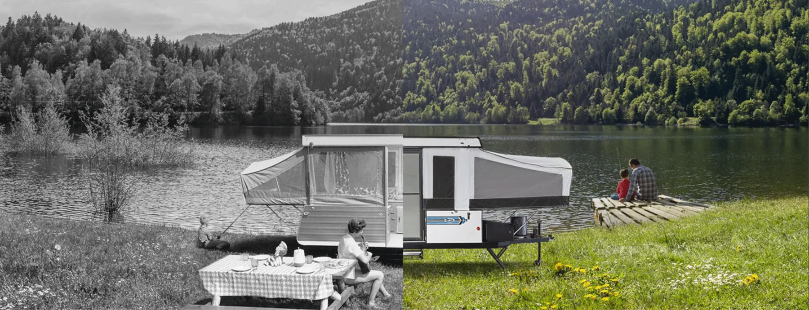

Still true
What came out of all that.
Fifty-eight years of building the same thing in the same town leaves marks — in the roof, the frame, the warranty and the inspection every coach still gets.
The Jayco DifferenceFifty-eight years, a million coaches and one town in northern Indiana. Here is the whole of it, year by year.
In 1968 Lloyd Bontrager built a camping trailer in northern Indiana around a lifter system he had designed himself, and his wife Bertha helped him sell it. One hundred and thirty-two people bought one that first year. What follows is what happened next — the products, the plants, the people, and the year the family lost its founder and kept going.

Thirty moments from Jayco’s history, in the order they happened.
Fifty-eight years of building the same thing in the same town leaves marks — in the roof, the frame, the warranty and the inspection every coach still gets.
The Jayco DifferenceJayco has been on the same street since 1968. Free factory tours run two mornings a week, with an outdoor showroom of current models next door.
Visit UsNo. Thor Industries acquired Jayco on 1 July 2016, after Jayco had spent five years as the largest privately held RV manufacturer in the world. It still trades under its own name from Middlebury, Indiana, and in 2021 became the Jayco Family of Companies, covering four divisions.
Lloyd and Bertha Bontrager, in 1968, around a fold-down camper with a lifter system Lloyd designed. Al Yoder joined as a partner the following year. Lloyd was inducted into the RV Hall of Fame in 1994, Al Yoder in 1996 and Wilbur Bontrager in 2008.
Middlebury, Indiana, which is where the company has been from the beginning and where the headquarters completed in 1999 still stands. There have been others — Kansas and Canada from 1970, both closed in the 1974 energy crisis, and Twin Falls, Idaho from 2005.
Jay Flight, which launched in 2002 and has been the best-selling travel trailer in North America for fifteen consecutive years. Jay Feather is older still under another name — it arrived in 2001 as the Kiwi. Both are in the current catalog.
It did, from 1979, for Mackinac Island in Michigan — where motor vehicles are banned, so the tourist trams are pulled by horses. It is the strangest line in the company’s history and it is entirely real.